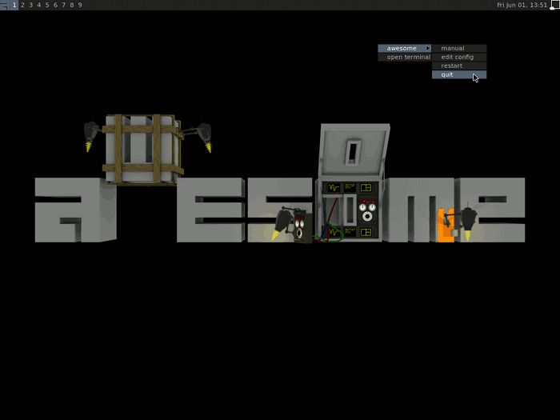
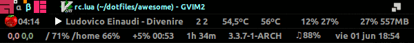
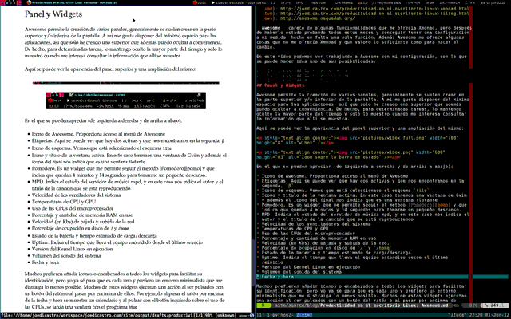
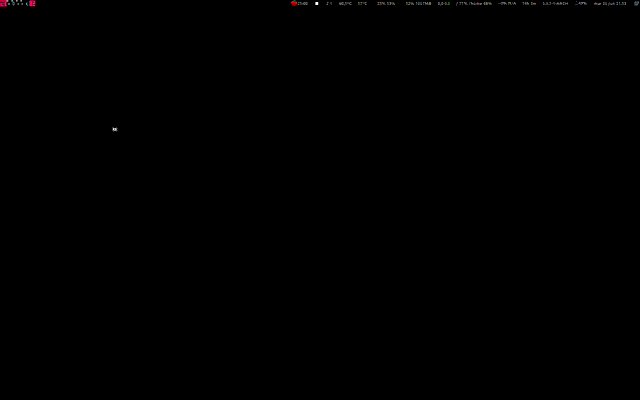
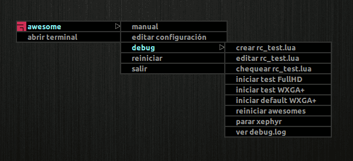
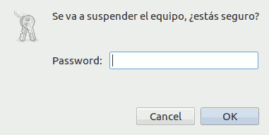

Como había comentando en el anterior articulo sobre Xmonad, tenía la intención de probar un Gestor de ventanas de mosaico más, antes de tomar la decisión final de cual emplear a diario. Y si, y solo si, resultaba ser una mejor alternativa, abandonaría Xmonad. Este tiling window manager era Awesome y ha conseguido con creces que abandone a Xmonad.
Awesome carece de algunas funcionalidades que me ofrecía Xmonad, pero después de trabajar con él durante seis meses y conseguir tener una configuración a mi medida, solamente hecho en falta una característica que comentare después. Además Awesome me ofrece algunas características que no me ofrecía Xmonad y que valoro lo suficiente como para realizar el cambio sin mirar atrás.
Awesome vs Xmonad
En esta tabla podemos ver una comparativa rápida de algunas de las características de ambos gestores de ventanas.
| Característica | Awesome | Xmonad |
|---|---|---|
| Lenguaje | C | Haskell |
| Extensible | Lua | Haskell |
| Gestión ventanas | Automático | Automático |
| Soporte ratón | Muy bueno | Básico |
| Bandeja sistema (systray) | Integrada | No |
| Paneles | Integrado | No |
| Reinicio en caliente | Si | Si |
| Librería | XCB | Xlib |
| Soporte varios monitores | Muy bueno | Bueno |
| Transparencias | Gestor externo | Gestor externo |
| Integración escritorios | Buena | Muy buena (Gnome, KDE) |
| Desarrollo | Muy activo | Muy activo |
| Estabilidad | Estable | Estable |
| Documentación | Buena | Buena |
Ventajas
Una de las principales ventajas de Awesome sobre Xmonad es la velocidad de respuesta que ofrece el entorno, que en Awesome es bastante superior a la de Xmonad. Alguna que otra vez, al intentar realizar muchas operaciones consecutivas entre ventanas y escritorios en Xmonad, se me ha quedado colgado y he tenido que reiniciarlo (que se hace en caliente y en segundos, pero no deja de ser algo molesto). En este sentido Awesome solo se me ha colgado un par de veces.
Otra de las grandes ventajas es que al configurarse en Lua es bastante más sencillo hacerse con él, ya que es un lenguaje relativamente asequible y carece de la complejidad inicial de Haskell para aquellos que no conocen la programación funcional. Esto aumenta las posibilidades de personalizarlo para un usuario con conocimientos muy básicos de programación.
La configuración por defecto de Awesome también es más completa y amigable que la de Xmonad, partiendo de un esquema tradicional de ventanas flotantes y con menús que nos permiten dar los primeros pasos y poder abandonar la sesión sin llegar a conocer las combinaciones de teclado por defecto. Algo que agradecerán aquellos que se hayan tenido que enfrentar a una configuración por defecto de Xmonad por primera vez. Esto invita a conocer el sistema y no abandonarlo "asustado" por su complejidad. En la imagen se puede ver el aspecto que presenta una sesión de Awesome con la configuración por defecto.

Para acceder al menú podemos bien hacer click sobre el icono de Awesome en la parte superior izquierda o bien con el botón derecho en cualquier parte de la pantalla. También se puede acceder a él con la combinación de teclas
Win+w
Finalmente, el que Awesome tenga integrados aspectos como los paneles, una bandeja del sistema (systray), lanzador de aplicaciones y un soporte muy bueno del ratón facilita el poder emplearlo en solitario, sin un sistema de escritorio tradicional detrás. Y a través de librerías es fácil implementar un sistema de notificaciones, un localizador de ventanas, temas, menús emergentes, ...
Desventajas
Quizás para mí la mayor desventaja frente a Xmonad y lo único que hecho realmente en falta, es la imposibilidad, a diferencia de Xmonad, de poder regular el tamaño vertical de las ventanas. Es particularmente útil en algunas situaciones y en Xmonad está integrado de manera natural. Pero después de varios meses he aprendido a vivir sin ello.
La otra gran desventaja es que el desarrollo aún no ha alcanzado el estadio de madurez de Xmonad, esta sujeto a demasiados cambios y no cuidan demasiado la retrocompatibilidad. Las nuevas versiones frecuentemente obligan a realizar cambios en la configuración para que todo vuelva a funcionar con normalidad.
Por otro lado, la instalación en algunas distribuciones puede no ser tan sencilla como la de Xmonad por la falta de soporte a la librería XCB o por necesitar versiones especificas de cairo.
Diferentes filosofías
Siendo como son ambos, gestores de ventanas de mosaico, difieren particularmente en la manera de entender principalmente dos conceptos:
Múltiples escritorios
Aquí Xmonad sigue el concepto tradicional de múltiples escritorios en Linux, soportando por defecto 9 por monitor y asignándoles un número del 1 al 0. Luego una aplicación puede estar, por ejemplo, en el escritorio 4 del monitor 2 y podemos movernos entre escritorios y monitores y mover a su vez las aplicaciones entre ellos.
En cambio, Awesome, aunque aparentemente sigue el mismo sistema, y para
cualquiera que no quiera profundizar en ello no habrá diferencia alguna, se
basa en un concepto diferente. En Awesome cada escritorio es en realidad una
etiqueta y puede ser tanto un número como un texto. En principio también
son 9 por monitor, aunque esto puede ampliarse o reducirse en la configuración.
La diferencia principal es que una aplicación puede ser asignada a varias
etiquetas simultáneamente y puede por lo tanto ser mostrada en varios
escritorios a la vez. Esto permite asignar de forma muy sencilla etiquetas
destinadas a una tarea y predefinir ciertas aplicaciones para que sean mostradas
en una o más etiquetas. Por ejemplo podemos tener una etiqueta para
redes sociales y mostrar allí un navegador, pero al mismo tiempo podemos tener
una etiqueta desarrollo en la que también queremos que se muestre el navegador.
Por otro lado, también es posible mostrar varias etiquetas al mismo tiempo, lo
que nos permite trabajar en dos tareas distintas y bien definidas, cada una en su
etiqueta, y en un momento dado, visualizarlas juntas sin perder la asignación de
etiquetas original. En este sentido Awesome es mucho más flexible y potente que
Xmonad.
Múltiples monitores
En este caso Xmonad comparte el mismo escritorio en distintos monitores. Por lo tanto si estamos en el escritorio 1 en el monitor 1 y nos movemos al escritorio 2, lo hará en todos los monitores a la vez, lo que también es el comportamiento clásico. Con lo que podemos decir que aunque tenemos 9 escritorios por monitor, se comporta como si tuviéramos 9 para todos los monitores.
Awesome, al contrario, emplea 9 etiquetas por monitor independientes entre si. Lo que significa que en este casi si tenemos 9 escritorios reales por cada monitor. Si nos encontramos en el monitor 1 y la etiqueta 1, al cambiar a la etiqueta 2, el resto de monitores permanecerán inalterados en la etiqueta en la que estuvieran previamente. En este sentido Awesome también sigue siendo bastante más flexible y potente que Xmonad. Este comportamiento puede ser alterado mediante la configuración. Hay quienes prefieren un método de trabajo y quienes prefieren el otro, yo soy de los que prefieren el comportamiento de Awesome.
Awesome con Gnome
Actualmente estoy empleando Awesome en solitario, si un escritorio detrás, lo que me obliga a configurar por mi cuenta todos los servicios que estos proporcionan, pero me compensa con la ligereza que me reporta el no emplear un pesado escritorio por debajo. Sin embargo, los primeros meses lo empleé conjuntamente con Gnome en Ubuntu, utilizando solo los componentes básicos del mismo. La forma de configurar una sesión de Awesome con Gnome en Ubuntu (11.10 y 12.04) y en Arch Linux, la distribución que estoy empleando ahora, es a través de los siguientes ficheros:
/usr/share/applications/awesome.desktop
[Desktop Entry] Version=1.0 Type=Application Name=Awesome Comment=The awesome launcher! TryExec=awesome Exec=awesome
/usr/share/gnome-session/sessions/awesome.session
[GNOME Session] Name=Awesome session RequiredComponents=gnome-settings-daemon; RequiredProviders=windowmanager; DefaultProvider-windowmanager=awesome DesktopName=GNOME
/usr/share/xsessions/awesome-gnome-session.desktop
[Desktop Entry] Name=Awesome GNOME Comment=Dynamic window manager TryExec=/usr/bin/gnome-session Exec=gnome-session --session=awesome Type=XSession
Evidentemente para esto es necesario instalar los paquetes necesarios para
ejecutar Awesome que en el caso de Ubuntu son awesome y awesome-extra:
$ sudo apt-get install awesome awesome-extra
En Arch, bastaría con instalar el paquete awesome:
$ sudo pacman -S awesome
Mi configuración
A diferencia de Xmonad, mi configuración de Awesome no está contenida en un solo
fichero, ya que el tema y los diversos plugins están alojados dentro de sus
propios directorios. Además el fichero de configuración rc.lua es demasiado
extenso (cerca de 1200 lineas) para volcarlo aquí. Así que me limitare a
mencionar los aspectos más destacados, la configuración completa queda
disponible a través de mi repositorio en GitHub.
Destacar que al principio del fichero incluyo una Cheat Sheet ("chuleta") con todas las combinaciones de teclado y ratón que tengo habilitadas en mi configuración.
Panel y Widgets
Awesome permite la creación de varios paneles, generalmente se suelen crear en la parte superior y/o inferior de la pantalla. A mi me gusta disponer del máximo espacio posible para las aplicaciones, así que solo he creado uno superior que además puedo ocultar a conveniencia. De hecho, para determinadas tareas, lo mantengo oculto la mayor parte del tiempo y solo lo muestro cuando me interesa consultar la información que allí se muestra.
Aquí se puede ver la apariencia del panel superior y una ampliación del mismo:

En el que se pueden apreciar (de izquierda a derecha y de arriba a abajo) los siguientes widgets:
- Icono de Awesome. Proporciona acceso al menú de Awesome
- Etiquetas. Aquí se puede ver que hay dos activas y que nos encontramos en la
segunda,
β - Icono de esquema. Vemos que está seleccionado el esquema
tile - Icono y titulo de la ventana activa. En este caso tenemos una ventana de Gvim y además el icono del final nos indica que es una ventana flotante
- Pomodoro. Es un widget que me permite seguir el método Pomodoro y que indica que quedan 4 minutos y 14 segundos para tomarme un pequeño descanso.
- MPD. Indica el estado del servidor de música mpd, y en este caso nos indica el autor y el titulo de la canción que se está reproduciendo
- Velocidad de los ventiladores del sistema
- Temperaturas de CPU y GPU
- Uso de las CPUs del microprocesador
- Porcentaje y cantidad de memoria RAM en uso
- Velocidad (en Kbs) de bajada y subida de la red.
- Porcentaje de ocupación en disco de
/y/home - Estado de la batería y tiempo estimado de carga/descarga
- Uptime. Indica el tiempo que lleva el equipo encendido desde el último reinicio
- Versión del Kernel Linux en ejecución
- Volumen del sonido del sistema
- Fecha y hora
Muchos prefieren añadir iconos o encabezados a todos los widgets para facilitar
su identificación, pero yo ya conozco para que es cada uno y prefiero un entorno
minimalista que me distraiga lo menos posible. Muchos de estos widgets ejecutan
una acción al ser pulsados con un botón del ratón o al pasar por encima de
ellos. Por ejemplo al pasar el ratón por encima de la fecha y hora se muestra un
calendario y al pulsar con el botón izquierdo sobre el uso de las CPUs, se lanza
una ventana con el programa htop
Localizar aplicaciones
Una de las funcionalidades geniales que tenía implementada en Xmonad me permitía conocer todas las ventanas que estaban abiertas y elegir la deseada con una rápida combinación de teclas. Awesome no tiene esto implementado, pero gracias a una librería externa, Revelation, podemos emplear un método similar al famoso Exposé del Mac OS y también presente en Compiz. Lo que hace es mostrarnos en la etiqueta que estemos actualmente todas las ventanas abiertas en forma de mosaico y podemos elegir una de ellas para saltar automáticamente a ella (y la etiqueta en la que se encuentre). Aquí podemos ver un screencast de su funcionamiento:

Es también un método muy rápido y muy visual, al final he acabado prefiriendo este método al que empleaba en Xmonad, ya que en este último, el titulo de las ventanas podía ser muy ambiguo y no ser fácil dar con la ventana adecuada.
Gestión dinámica de etiquetas
Aunque por defecto Awesome define 10 etiquetas por monitor, podemos definir a nuestro antojo el número de ellas que queramos en el fichero de configuración. Podemos optar por un número clásico en los escritorios Linux, cuatro, o podemos crear una para cada tarea concreta más una libre. Por defecto tengo definidas diez, empleando para identificarlas los números en griego:
-- definición de las etiquetas en el fichero de configuración rc.lua tags[s] = awful.tag({ "α", "β", "γ", "δ", "ε", "ς", "ζ", "η", "θ"}, s, layouts[1])
Sin embargo, en mi configuración empleo una librería externa, Eminent,
que gestiona estas etiquetas de forma dinámica, creándolas y destruyéndolas
según sea necesario. Así de entrada solo tenemos una etiqueta, α y solo se
creara una segunda etiqueta, β si nos desplazamos a ella. Del mismo modo,
cuando eliminamos la última ventana de una etiqueta y la abandonamos, se
destruye. La ventaja de esto es que por un lado nos facilita localizar donde
estamos más fácilmente y por otro, que en caso de ser necesario, si necesitamos
más etiquetas (de las creadas por defecto), las creara de forma automática. De
este modo cuando llegamos a la etiqueta θ, si necesitamos otra, creara la 10
y así en lo sucesivo.
Lanzar aplicaciones
Existen dos métodos para realizar esta tarea:
- Empleando un prompt que emerge en el panel superior y nos permite escribir el
comando que queremos ejecutar y que posee autocompletado. La combinación de
teclas por defecto que activa esto es
Win+r
- Empleando menubar. Menubar es una librería externa, que será incluida
en la próxima versión de Awesome por defecto, que al igual que muchos
otros lanzadores de aplicaciones (Gnome Do, Kupfer, Synapse, etc) nos va
mostrando las aplicaciones disponibles en función de lo que vayamos tecleando.
Se lanza con la combinación de teclas
Win+py en mi caso, esta aparece inmediatamente debajo del panel superior. Aquí se puede ver la menubar en funcionamiento (la teclaWintambién es llamadaSuper):

Yo además empleo un tercer método que heredo de Xmonad, y es emplear
dmenu para lanzar aplicaciones. dmenu es muy parecido al prompt de
Awesome, pero busca para el autocompletado en todo el nombre del comando y no
solo al principio. Además muestra todas las coincidencias disponibles y que se
pueden seleccionar con las teclas de dirección.
Grabar vídeos y screencasts del escritorio
Adicionalmente, tengo definidas ciertas combinaciones de teclas para lanzar
determinadas aplicaciones o procesos con las teclas de función. Dentro de estos
atajos de teclado cabe destacar cinco que en lugar lanzar una aplicación,
comienzan o terminan un determinado proceso. Estas combinaciones, que van de
F8 a F12, las utilizo para grabar vídeos y screencasts con gifs
animados y son las que he empleado para ilustrar este articulo.
-- Win + F8 Start gif screencast recording LowRes -- Win + F9 Start gif screencast recording HighRes -- Win + F10 Stop gif screencast recording -- Win + F11 Start mkv screencast recording -- Win + F12 Stop mkv screencast recording awful.key({ modkey }, "F8", function () awful.util.spawn_with_shell("rm " .. home_dir .. "/screencast.gif") awful.util.spawn("ffmpeg -f x11grab -s " .. scr_res .. " -r 2 -i :0.0 -b:v 500k -pix_fmt rgb24 -y" .. " -loop 0 -s 640x400 " .. home_dir .. "/animated.gif") end), awful.key({ modkey }, "F9", function () awful.util.spawn_with_shell("rm " .. home_dir .. "/screencast.gif") awful.util.spawn("ffmpeg -f x11grab -s " .. scr_res .. " -r 2 -i :0.0 -b:v 500k -pix_fmt rgb24 -y" .. " -loop 0 -s 1440x900 " .. home_dir .. "/animated.gif") end), awful.key({ modkey }, "F10", function () awful.util.spawn("killall ffmpeg") awful.util.spawn("convert ephemeral:" .. home_dir .. "/animated.gif -fuzz 7% -layers Optimize " .. home_dir .. "/screencast.gif") end), awful.key({ modkey }, "F11", function () awful.util.spawn_with_shell("rm " .. home_dir .. "/screencast.mkv") awful.util.spawn("ffmpeg -f x11grab -s " .. scr_res .. " -r 25 -i :0.0 -sameq " .. home_dir .. "/screencast.mkv") end), awful.key({ modkey }, "F12", function () awful.util.spawn("killall ffmpeg") end)
Gestión tiempo con pomodoro
La técnica Pomodoro puede ser muy provechosa en ciertas tareas si se emplea con sentido común y se sigue más o menos a rajatabla. Yo la empleo muy a menudo cuando tengo una tarea concreta en la que quiero centrarme sin distracciones para sacarla adelante y no caer en el error de procrastinar demasiado. Es una combinación ideal entre concentración puntual y alternar distracciones, que impiden a uno "quemarse" por no saber echar el freno a tiempo. Es una técnica muy útil a la hora de programar o de crear un articulo como este, pero que es difícilmente aplicable en tareas que requieren cierta multitarea como son las de administración de sistemas.
Existen múltiples aplicaciones, applets, indicadores, etc para aplicar esta técnica, que se basaba originalmente en un simple reloj de cocina. Pero alguien, en su momento pensó, que no era mala idea crear un widget para Awesome que nos permitiera medir los tiempos para aplicarla y creo una librería externa para ello. Yo empleo esta librería ligeramente modificada para controlar el tiempo transcurrido.
El funcionamiento es muy básico, pulsamos sobre el icono y se activa la cuenta atrás de 25 minutos. Al acabar, una alarma sonora y una notificación emergente, nos avisan de que se ha terminado el tiempo de trabajo y nos merecemos un descanso. Volvemos a pulsar sobre el widget y comienza la cuenta atrás de cinco minutos y se repite el proceso. Si pulsamos con el botón derecho se reinicia el widget.
Debug con Xephyr
Esta es una de las posibilidades que nos permite Awesome, que más nos ayudará a la hora de "trastear" con él, sin temor a "romper" nada. Podemos depurar los errores y realizar pruebas con Awesome con una configuración distinta a la nuestra y en una sesión X distinta a la actual. Esto lo conseguimos ejecutando Awesome dentro de un servidor X, Xephyr, que aparecerá dentro de nuestra sesión como una ventana más.
Yo he integrado esta posibilidad dentro del menú de Awesome para que sea mucho más sencillo e inmediato el poder probar cambios en un entorno de pruebas.

En este vídeo se puede ver el funcionamiento básico de este sistema. Normalmente inicio el entorno de pruebas a pantalla completa, pero que se pueda apreciar mejor la diferencia, he grabado la mayoría del vídeo con una sesión de Xephyr a menor resolución. Lo que se puede ver es como primero inicio una sesión de Awesome dentro de Xephyr con la configuración por defecto. Después la cierro y compruebo la sintaxis Lua de la configuración de test. La notificación me alerta de que el fichero no existe, luego procedo a crearlo (es una copia de la configuración real actual) y vuelvo a comprobar la sintaxis. Una vez que veo que esta es correcta, lanzo Awesome con la configuración de test. Cierro la sesión y procedo a realizar cambios en la configuración de pruebas. Ahora lanzo de nuevo Awesome con esta configuración y compruebo que efectivamente se han realizado los cambios. Dentro de esta sesión vuelvo a editar la configuración de test para deshacer los cambios y después reinicio este Awesome de pruebas. Se puede ver como efectivamente todo vuelve a el estado anterior. Cierro la sesión y compruebo el log de la sesión para ver los mensajes de error. Finalmente abro varias sesiones de Awesome a la vez y una a pantalla completa.
Muestra de las posibilidades que ofrecen Xephyr y el script awdt.py para poder depurar la configuración de Awesome. Recomiendo ver en alta resolución y a pantalla completa.
Para realizar estas acciones programé un script en Python, awdt.py, que incluyo
al final del articulo.
Una de las ventajas de Awesome con respecto a Xmonad, es que no necesitamos recompilar cada vez que realizamos un cambio en la configuración, basta con editar el fichero, salvar y reiniciarlo. Reiniciar Awesome es algo que lleva menos de un segundo.
Reinicio, apagado y suspensión
Dado que no empleo ningún escritorio, arrancando directamente la sesión en
Awesome, debo gestionar directamente cierto tipo de situaciones que vienen
resueltas de manera predefinida en estos. Uno de estos casos es la gestión de
energía del equipo, esto es: apagarlo, reiniciarlo, suspenderlo e hibernarlo.
Dado que nunca lo hiberno, he implementado únicamente las tres primeras
acciones. Lo que hago es emplear directamente los comandos de consola, que
ejecuto a través de un dialogo gráfico que me pide la contraseña para sudo con
gksudo (podría haber empleado Zenity, Xdialog o cualquier otro similar)
que es activado a través de una combinación de teclas. Por ejemplo, para
suspender el equipo lo activo a través de la combinación Win + s :
awful.key({ modkey }, "s", function () awful.util.spawn("gksudo pm-suspend -m " .. "'Se va a suspender el equipo, ¿estás seguro?'") end),
con el siguiente resultado:

Sé que la mayoría no está acostumbrado a tener que introducir la contraseña para realizar cualquiera de estas acciones y posiblemente detestarían hacerlo, pero yo lo prefiero así.
Bloqueo de la pantalla
Empleo un método similar para bloquear la pantalla, ya que no empleo un
salvapantallas (simplemente apago la pantalla pasado un cierto tiempo) empleo el
programa slimlock para realizar esta tarea y lo activo de forma manual
con otra combinación de teclas. El resultado es una pantalla como esta:
Documentación y enlaces de interés.
La documentación del código fuente y de la API de Awesome son bastante buenas, con lo que si tienes los conocimientos suficientes no te será muy dificil hacerte con él. Si necesitas algo más general, tanto el propio Wiki de Awesome como los recursos disponibles gracias a su comunidad (lista de correo e IRC) son bastante útiles para ayudarte a conseguir la configuración que más se ajuste a tus necesidades. Es una comunidad muy dinámica y bastante colaboradora. También en el Wiki de Arch Linux hay información interesante sobre Awesome.
- Pagina principal
- Wiki
- Pantallazos
- Ficheros de configuración
- API Docs
- Arch Linux Wiki
- Programming in Lua
awdt.py
Este es el contenido del script awdt.py que empleo para depurar la
configuración de Awesome en un entorno de pruebas. Se encuentra dentro del mismo
repositorio que el resto de la configuración.
#!/usr/bin/env python # encoding: utf-8 """ awdt.py: a script to debug awesome wm configs in nested Xephyr sessions This script is a tool intended to help to debug Awesome wm configurations in a safe manner. To this purpose uses the Xephyr X server to nest a X session inside the current Awesome X session. The original idea come from the mikar's bash awmtt script (Thanks mikar): https://github.com/mikar/awmtt Needs logger.py and check_execs.py from my Python Recipes repository at https://github.com/joedicastro/python-recipes """ #============================================================================== # Copyright 2012 joe di castro <joe@joedicastro.com> # # This program is free software: you can redistribute it and/or modify # it under the terms of the GNU General Public License as published by # the Free Software Foundation, either version 3 of the License, or # (at your option) any later version. # # This program is distributed in the hope that it will be useful, # but WITHOUT ANY WARRANTY; without even the implied warranty of # MERCHANTABILITY or FITNESS FOR A PARTICULAR PURPOSE. See the # GNU General Public License for more details. # # You should have received a copy of the GNU General Public License # along with this program. If not, see <http://www.gnu.org/licenses/>. #============================================================================== __author__ = "joe di castro <joe@joedicastro.com>" __license__ = "GNU General Public License version 3" __date__ = "05/06/2012" __version__ = "0.5" try: import os import sys from argparse import ArgumentParser, RawDescriptionHelpFormatter from re import findall from shutil import copy from subprocess import Popen, PIPE, STDOUT from tempfile import gettempdir from time import sleep from logger import Logger from check_execs import check_execs except ImportError: # Checks the installation of the necessary python modules print((os.linesep * 2).join(["An error found importing one module:", str(sys.exc_info()[1]), "You need to install it", "Stopping..."])) sys.exit(-2) def arguments(): """Defines the command line arguments for the script.""" main_desc = """Debug awesome wm configurations in Xephyr sessions. Use `new` to create a new test config file cloned from your rc.lua Use `check` to test the Lua syntax on this file Use `start` to start a new awesome debug session Use `restart` to restart all awesome debug sessions Use `stop` to stop all awesome debug sessions """ parser = ArgumentParser(description=main_desc, formatter_class=RawDescriptionHelpFormatter) parser.add_argument("action", choices=["new", "check", "start", "restart", "stop"], help="the action to perform") parser.add_argument("-t", dest="test", action="store_true", default=False, help="use created test configuration file") parser.add_argument("-s", dest="screen", help="the screen resolution") parser.add_argument("-d", dest="display", help="the DISPLAY to use") parser.add_argument("-v", "--version", action="version", version="%(prog)s {0}".format(__version__), help="show program's version number and exit") return parser def main(): """The script core.""" # the files needed cfg_dir = os.path.expanduser("~/.config/awesome") rc_real = os.path.join(cfg_dir, "rc.lua") rc_test = os.path.join(cfg_dir, "rc_test.lua") rc_original = os.path.join(cfg_dir, "rc_original.lua") xpids_tmp = os.path.join(gettempdir(), "xpids") apids_tmp = os.path.join(gettempdir(), "apids") log_file = os.path.join(cfg_dir, "awdt.log") args = arguments().parse_args() # get the current screen resolution xdpyinfo = Popen("xdpyinfo", stdout=PIPE).stdout.read() currres = findall("dimensions:\s*(\d+x\d+)\spixels", xdpyinfo)[0] # set defaults args.screen = args.screen if args.screen else currres args.test = rc_test if args.test else rc_original args.display = args.display if args.display else 1 if args.action == "new": copy(rc_real, rc_test) if args.action == "check": check = Popen("awesome -c {0} -k".format(rc_test).split(), stdout=PIPE, stderr=STDOUT) check_out = check.stdout.readlines() Popen(["notify-send", "Lua sintax chek:", os.linesep.join(check_out)]) if args.action == "start": # clean log in each debug session if not os.path.exists(apids_tmp): if os.path.exists(log_file): os.remove(log_file) log = Logger() log.filename = log_file log.header("https://github.com/joedicastro/dotfiles", "This is a log from an Awesome wm's debug session") log.time("Start time") x_cmd = "Xephyr -ac -br -noreset -screen {0} :{1}".format(args.screen, args.display) aw_cmd = "awesome -c {0}".format(args.test) xserver = Popen(x_cmd.split(), stdout=PIPE, stderr=STDOUT) sleep(1) os.putenv("DISPLAY", ":{0}.0".format(args.display)) awesome = Popen(aw_cmd.split(), stdout=PIPE, stderr=STDOUT) # save the process PIDs for kill them properly later. This way, no # matter how many awesome sessions do you start, all of them will be # reported to the log file. Also, awesome PIDs are used to restart each # one when is required with open(xpids_tmp, 'a+') as xpids: xpids.write(str(xserver.pid) + os.linesep) with open(apids_tmp, 'a+') as apids: apids.write(str(awesome.pid) + os.linesep) log.list("Parameters", ["Screen resolution: {0}".format(args.screen), "Display: {0}".format(args.display), "Configuration file: {0}".format(args.test)]) log.list("Xephyr output", xserver.stdout.readlines()) log.list("Awesome output", awesome.stdout.readlines()) log.time("End time") log.free(os.linesep * 4) log.write(True) if args.action == "restart": with open(apids_tmp, 'r') as apids: for pid in apids.readlines(): os.kill(int(pid), 1) if args.action == "stop": with open(xpids_tmp, 'r') as xpids: for pid in xpids.readlines(): os.kill(int(pid), 9) os.remove(xpids_tmp) os.remove(apids_tmp) if __name__ == '__main__': check_execs("Xephyr", "awesome") main() #============================================================================== # Changelog: #============================================================================== # # 0.5: # # * New log file per debug session # * Improve argparse help # * Better comments # # 0.4: # # * remove debug prints # * clean code # # 0.3: # # * implement logging functions # * check for executables # # 0.2: # # * argparse instead of sys.argv # * create a new rc_test.lua file from original # * restart the awesome session # # 0.1: # # * First attempt # #==============================================================================